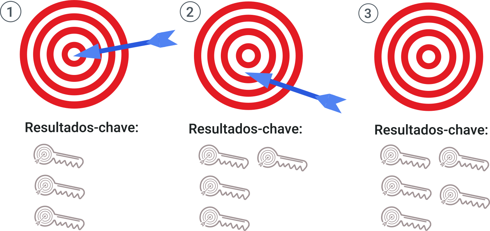

Os OKRs devem servir como norte para todos da organização, que saberão exatamente o que fazer para contribuir para o atingimento das metas organizacionais e terão clareza sobre as reais prioridades da empresa.
Por isso, é importante que o CEO ou a alta direção da empresa definam com clareza os rumos que a organização deve seguir, definindo a estratégia organizacional e as prioridades, nos objetivos a serem alcançados. Dessa forma, equipes e colaboradores terão a orientação necessária para traçar seus próprios objetivos alinhados às metas organizacionais.
A técnica de desdobramento dos OKRs permite que objetivos estratégicos traçados pela organização alcancem rapidamente os níveis tático e operacional, estabelecendo primeiro a meta macro para, em seguida, efetuar o desdobramento em metas para todas as equipes e colaboradores, que farão propostas de planos de ação para alcançá-las. Veja como ocorre o desdobramento passo a passo:
1. O CEO ou presidente da empresa, com a ajuda dos diretores, cria os objetivos e resultados-chave estratégicos, que dizem respeito ao aprimoramento ou impulsionamento do negócio da organização. Esse mesmo grupo esboça os resultados-chave dos diretores que, se atingidos, ajudarão o CEO a atingir seus OKRs.
2. Cada diretor se reúne com seus gestores (coordenadores, gerentes, supervisores) para definir as OKRs desses gestores, que, se atingidos, ajudarão os diretores a alcançar seus OKRs.
3. O gestor se reúne com seus liderados para esboçar os OKRs individuais de cada membro da equipe, que quando atingidos ajudarão os gestores a alcançar seus OKRs.
Utilize a abordagem SMART para a definição das metas de todos os KRs. Esse método, que ajuda as empresas a maximizar as chances de alcançar seus objetivos, é um acrônimo em que cada letra da sigla SMART representa um componente essencial para a definição de metas:
Nesse artigo do Blog da Siteware você poderá conhecer mais profundamente e aprender a utilizar a meta SMART. Acesse em:
Leia o conteúdo e faça o download do material disponibilizado!
A criação do OKR deve motivar todos da empresa a participar da construção da estratégia organizacional. Por isso, é importante que se adote os sistemas de metas bottom up e top down da seguinte forma: 40% dos objetivos definidos pelo CEO e alta direção da empresa (top down) e os 60% restantes definidos pelos colaboradores nos OKR’s de equipes ou individuais (bottom up).
Ao envolver todos os colaboradores nas tomadas de decisões sobre os objetivos organizacionais, o desempenho da equipe tende a melhorar, porque os colaboradores terão melhor visibilidade sobre como o próprio trabalho contribui para o alcance das metas estipuladas. Além disso, os funcionários têm maior facilidade em alinhar os próprios objetivos às prioridades da empresa.
O Google lançou o site “re: Work” em que reúne práticas, pesquisas e ideias da empresa para ajudar outras organizações a colocar pessoas em primeiro lugar, incentivando práticas de recursos humanos orientadas para dados. Nesse site, é possível encontrar um guia completo que poderá te ajudar a definir suas metas com OKRs de acordo com o método Google. Acesse em:
O método OKR propõe simplificar o foco da estratégia organizacional. Por isso, ao definir os objetivos é preciso escolher entre as principais necessidades da empresa e de seus clientes. O ideal é que se estabeleçam três ou quatro objetivos, cada um com três a cinco resultados-chave. Menos do que isso poderá não despertar a motivação dos colaboradores; mais que isso poderá dispersar o foco das prioridades que se deseja atender.
É importante acompanhar periodicamente o alcance dos objetivos ou o que falta para alcançá-los. A transparência em relação aos resultados é essencial para aumentar a motivação dos colaboradores, porque assim todos sentirão que estão trabalhando em prol dos mesmos objetivos.
Realizar o monitoramento dos trabalhos semanalmente é uma boa estratégia para garantir a fluidez do trabalho e conseguir realizar entregas em prazos mais curtos, já que ajustes no plano de ação podem ser executados mais rapidamente.
Os KPIs (Key Performance Indicators) devem ser usados no monitoramento, já que são indicadores-chave de desempenho que indicam de forma quantitativa o progresso dos processos internos da empresa, servindo como métricas para o acompanhamento dos resultados-chave.
Para entender melhor sobre indicadores de desempenho e começar a utilizá-los em sua empresa, baixe o Kit Gratuito de KPIs criado e disponibilizado pela Siteware. Nele você encontrará um guia completo com orientações para definir e implementar KPIs, um infográfico apresentando de forma visual informações úteis sobre a importância dos indicadores-chave de desempenho e uma planilha de KPI, que ajudará você a implementar os KPIs de forma prática. Acesse em:
Preencha os campos e faça o download do material!
Um time com foco em resultados é aquele formado por profissionais que sabem a relação entre esforço e resultado. É importante que o esforço da equipe não seja reconhecido somente no fim do objetivo e que cada progresso atingido seja levado em consideração. Entretanto, se toda a equipe estiver se esforçando, mas os resultados não aparecerem, alguma coisa não está sendo feita corretamente, ou o plano proposto não é completo em relação à meta a ser alcançada. Utilize métricas para quantificar a dedicação da equipe sem perder de vista os resultados esperados. Quando os atingir, comemore com todos do time e compartilhe as conquistas com o restante da empresa.
Apresentamos aqui dicas de como implementar o método OKR em sua empresa. Nos próximos materiais, veremos cases de empresas que passaram a utilizar o OKR para estabelecer seus objetivos organizacionais e alcançaram resultados positivos. Até lá!